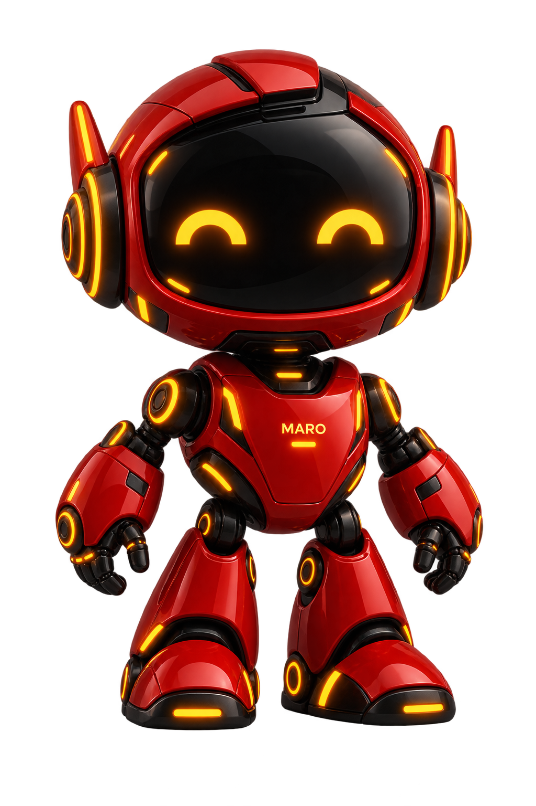
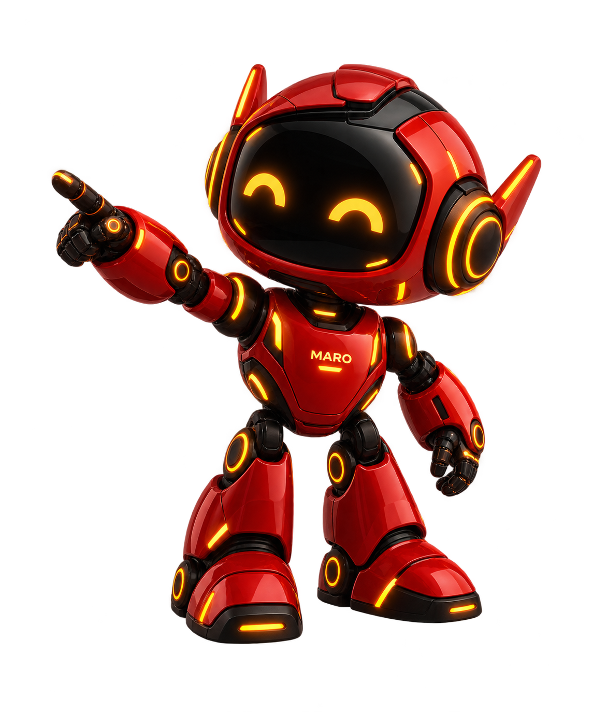
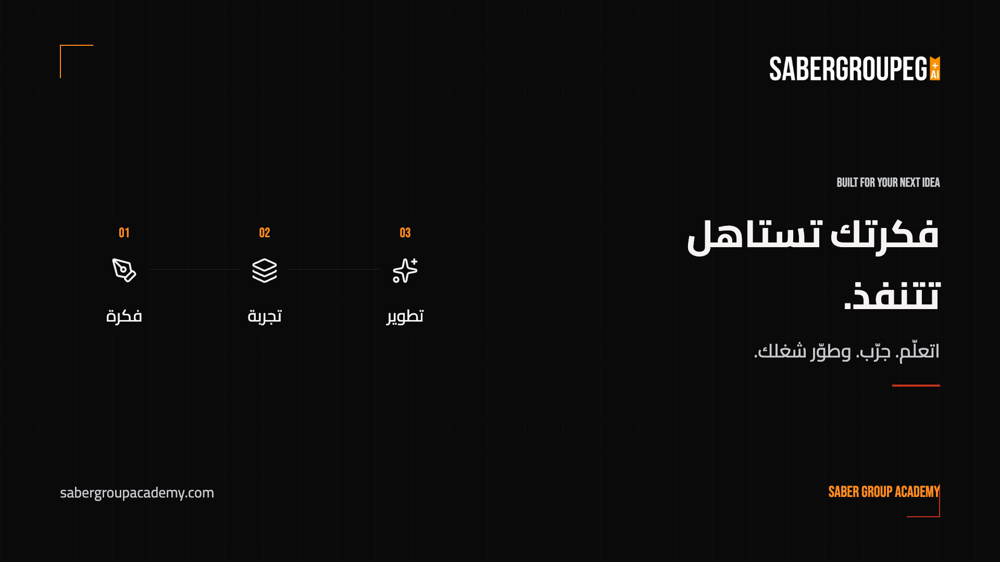
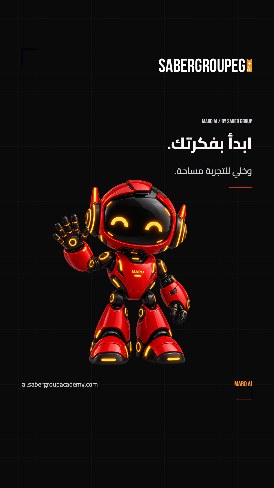
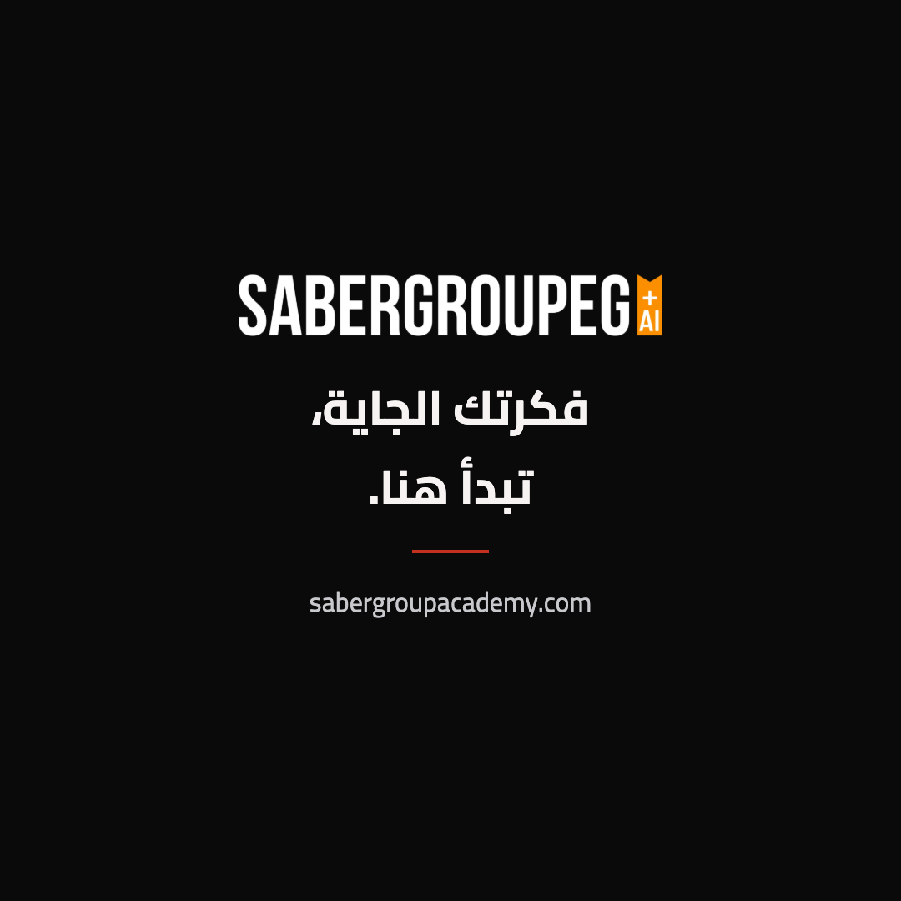

الدليل ده بروفايل إنتاج v1 مقترح؛ مش ادعاء إن كل ألوان الأنظمة متطابقة، ولا بديل عن اعتماد صاحب الهوية.
02 / الألوان والهندسةTHE MOTION PALETTE
فحم، أحمر، وتأكيد صغير بالبرتقالي.
#0A0A0ABackground
#151515Surface
#C4321FWarm Red
#FF8A1FOrange Accent
#F6F3F2Type
#C7C9CDSecondary
توازن الألوان
حوالي 75-85% محايد، 10-15% أحمر، والبرتقالي لا يزيد عادة عن 5%. لا نغيّر ألوان الصور الأصلية عشان النسب.
الجريد
72px عند عرض 1080. خط 1px وشفافية 2.5% تقريبًا. يتغير مع عرض المقاس، ويظل خلف المحتوى.
الحواف
قطع 17px وRadius حوالي 7px كمرجع هندسي. زوايا محدودة، من غير كروت زخرفية جوه كروت.
أحمر الترينينج والأكاديمية وثيمات الحسابات موثقين كملاحظات مصدر، مش بدائل عشوائية داخل نفس الفيديو. ملف brand-tokens.json يحتوي التفاصيل.
03 / اللوجوPRESERVE THE ORIGINAL
أصل ثابت. مش نتيجة توليد.
الأصل الأبيض/البرتقالي على الداكن.
في الفاتح: لوحة فحمية، مش تحويل اللوجو للأسود.
المسموح
تحريك الكونتينر، Fade، Scale بسيط، أو Mask يكشف الأصل كاملًا. احتفظ بنسبة العرض للارتفاع، ومساحة فارغة تعادل نصف ارتفاع اللوجو حوله.
المرفوض
إعادة رسم، كتابة الاسم بخط بديل، Morph، قلب أفقي، قص الشارة، إضافة 3D، أو تغيير اللون. لا يوجد ماستر فيكتور أصلي ضمن الأصول التي تمت مراجعتها.
الـWebP الأصلي محفوظ بالبايت، وPNG هو تحويل صيغة اجتاز تطابق البكسلات. ملفات الجريد SVG حقيقية، لكن لا تُسمى لوجو فيكتور.
04 / الكتابةARABIC FIRST. NOT OVERSIZED.
CAIRO / 700
فكرتك تستاهل تتنفذ.
عنوان متزن. سطر واضح. ومساحة للتصميم.
BUILT FOR YOUR NEXT IDEABEBAS NEUE / 400
العربي
Cairo 700 للعناوين و500 للنص. RTL وحروف متصلة. ممنوع Tracking أو تمديد أو تحريك الحروف منفصلة.
المقاس المقترح
1080 رأسي: ابدأ بعنوان 64px ونص 36px. من 3-7 كلمات، وبحد أقصى سطرين. قصر النص قبل تصغيره.
المزج
الروابط والأسماء الإنجليزية LTR مستقل. Bebas للإنجليزي القصير، وTajawal بديل فقط عند تعذر Cairo.
مولّد الفيديو ليس محرر نصوص دقيقًا. لو العربي أو اللوجو بيتشوّه، ولّد Plate بدون كتابة، وركب النص والخط الحقيقي بعدين.
05 / الحركةA RESTRAINED MOTION GRAMMAR
العنصر يستقر. وبعده، اللي يكمّله.
25FPS / proposed
12fEntrance / 480ms
8fExit / 320ms
20fLogo / 800ms
cubic-bezier(0.16, 1, 0.3, 1)
الحركة الأساسية
إزاحة 12-24px، Fade أو كشف Mask، وStagger فريمين. هدف بصري متحرك واحد في كل لحظة. Scale للكاميرا لا يتجاوز عادة 1.02x.
النهاية
Hold مقروء لا يقل عن ثانيتين، والأفضل ثلاثة. لا Logo يدور، لا Bounce متكرر، لا Glitch سريع ولا إضاءات تومض.
الـeasing مقتبس من المصدر. الـfps والتوقيتات تنظيم إنتاج مقترح. الفيديو المرجعي 8 ثوانٍ صامت، وليس حملة جاهزة أو هوية صوتية معتمدة.
06 / ماروTHE SAME CHARACTER. EVERY TIME.
شخصية ثابتة. وحضور على قد المشهد.

MARO-NEUTRALMARO-WAVE

MARO-POINTING
احتفظ بالدروع الحمراء، الـVisor الأسود، الإضاءة العنبرية، النسب، والكتابة الأصلية. لا تقلب الصورة، لا تغيّر الوش، ولا تضف أصابع أو أطراف.
دي صور Raster أصلية وليست موديل 3D أو Rig. بعض الصور لها هالة موجودة داخل البكسلات. حرّك الطبقة كاملة، أو استخدم قطعًا بين الوضعيات الأصلية؛ إعادة التوليد تحتاج مراجعة هوية صارمة.
07 / التكوينREFRAME. DO NOT JUST CROP.
نفس الروح. تكوين يناسب المقاس.

1920 × 1080 / ACADEMY

1080 × 1920 / MARO

1080 × 1080 / END CARD
المساحات الآمنة المقترحة محفوظة في JSON، وليست ضمانًا لمكان أزرار أي منصة. راجع وضع الإعلان الفعلي على الموبايل. الفريمات أمثلة جديدة للاتجاه، مش Screenshots من حملات منشورة.
بريف معتمد، أصول أصلية وخطوط، فريم ثابت، ستوريبورد، ثم تحريك الطبقات. اطلب مشروعًا قابلًا للتعديل فقط بالصيغة المدعومة فعلًا.
لو هي مولّد فيديو فقط
خلفية وحركة من غير نصوص ولوجوهات. اللوجو والعربي والـCTA يتضافوا في الكومبوزيت. البرومبت وحده مش ضمان.
قبل النشر
اللوجو الأصلي والنسب والألوان.
عربي متصل وحجم مقروء ومسافات آمنة.
مارو ثابت بدون تشوه.
لا أسعار أو وعود أو بيانات خاصة غير معتمدة.
حقوق الصور والموسيقى والصوت.
ملف فعلي يعمل ونهاية مقروءة.
ارفع أقل ملفات لازمة: MASTER INSTRUCTIONS + Brief + اللوجو + الخط + فريم اتجاه. أضف مارو فقط لو الفيديو يحتاجه. المراجعة الكاملة والمصادر وبصمات الأصول داخل ملفات الباكدج.
 MOTION DIRECTION / V1.0
MOTION DIRECTION / V1.0